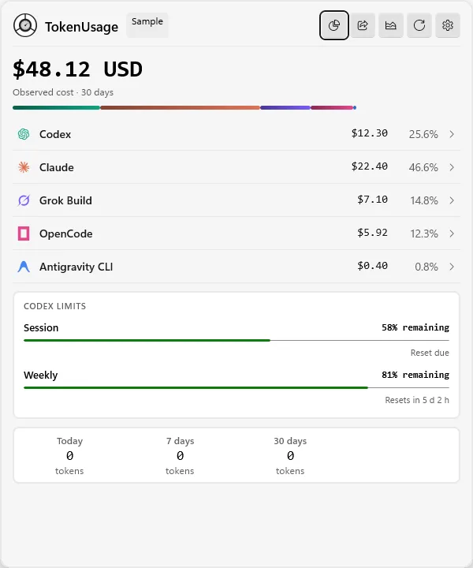
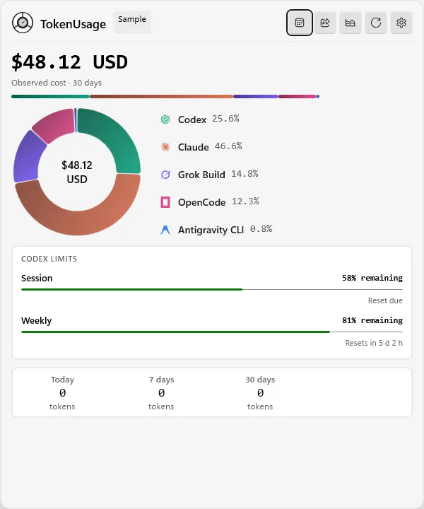
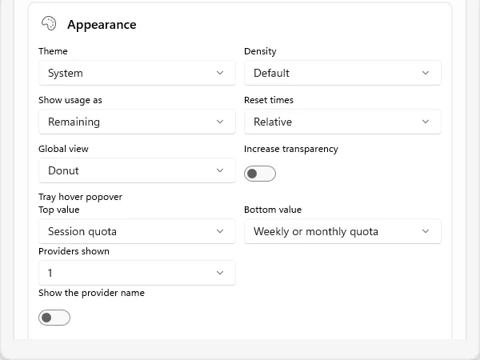
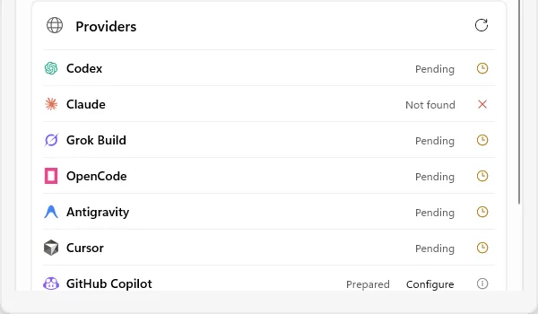

Local signal desk · Windows
Every local signal.
One honest reading.
See quota windows, observed tokens, spend, coverage, and reset cycles for your AI coding tools—without creating another account.
READOUT / 30 DAYSLOCAL
$48.12 USD
- Codex25.6%
- Claude46.6%
- Grok Build14.8%
- OpenCode12.3%
Sample data · no account details
01 / Product tour
Quick enough for the tray.
Deep enough for a report.
Real application captures from a packaged x64 build. Dashboard values come from the built-in sample mode.




02 / Data contract
Missing data stays missing.
TokenUsage keeps provider-reported values, estimates, stale snapshots, partial coverage, and unavailable values visibly separate.
Bounded readers
Only the smallest approved local or official source is read. Conversations, prompts, commands, and credentials stay out.
Independent signals
Quota, local usage, spend, coverage, freshness, and reset times remain distinct instead of becoming one misleading score.
Local by default
No TokenUsage account is required. Optional provider connections are explicit, documented, and stored with Windows protections.
Active readers
- Codex
- Claude Code
- Cursor
- Grok Build
- OpenCode
- Amp
- Mux
- Goose
- Hermes
- Antigravity
03 / Build
Native Windows.
No web shell.
C#, WinUI 3, Windows App SDK, a full-trust MSIX package, and a stable command-line contract.
POWERSHELLX64 · RELEASE
PS> .\BuildAndRun.ps1 `
src\TokenUsage.App\TokenUsage.App.csproj `
-SkipRun /p:Platform=x64
PS> .\scripts\check.ps1 `
-Platform x64 -Configuration Release